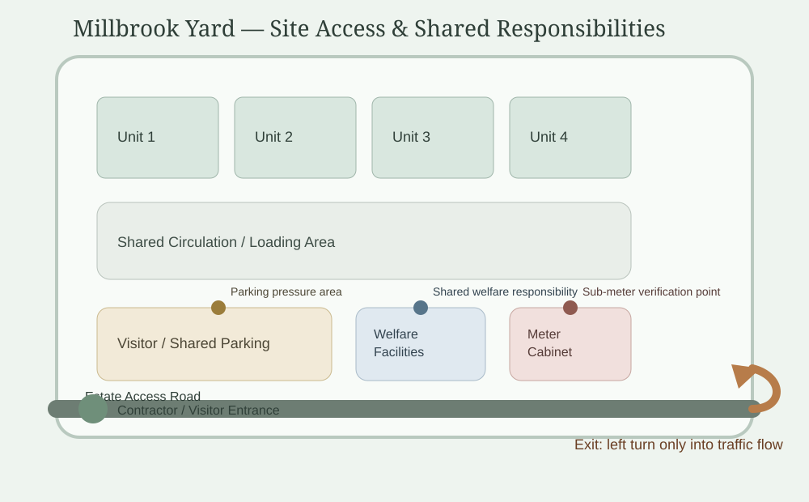

Hold / Group Dashboard / Strata Estates / Millbrook Yard / Access Views
Linked QR Point
Visitor Guidance
View Millbrook Yard site map

Shared site layer used to support visitor, contractor and tenant guidance.
Visitor View
Short-Stay Visitor Guidance
-
Parking
Use marked visitor bays only. Do not park in shared circulation or loading areas.
-
Site Movement
Follow tenant instructions and keep shared access routes clear.
-
Exit Restriction
Vehicles must leave by turning into the traffic flow. Do not cross the carriageway on exit.
-
Welfare Facilities
Visitor access only where authorised by the host tenant.
Contractor View
Works Access Guidance
-
Arrival
Report to estate contact before beginning works or unloading materials.
-
Temporary Parking
Contractor parking may be assigned during approved works. Shared circulation must remain passable.
-
Access Restrictions
Use approved contractor route only. Avoid blocking tenant workshop entrances.
-
Approval Documents
RAMS, insurance and permit status must be confirmed before works start.
Tenant View
Estate Notices & Responsibilities
-
Visitor Parking Reminder
Tenants should direct visitors to marked bays and avoid using the circulation area for overflow parking.
-
Meter Access Coordination
Unit access may be requested for sub-meter verification or reading checks.
-
Signage Requests
New or amended signage must be reviewed against estate standards before installation.
-
Shared Facilities
Report welfare, access or parking issues through the estate contact route.
Manager / Governance View
Record Controls
-
QR Point
MBY-QR-004 — Visitor parking and access guidance
-
Last Updated
Access wording revised following recent parking complaint
-
Review Trigger
Update required when contractor works or parking arrangements change
-
Governance Note
Different access views preserve clarity without exposing unnecessary estate management detail.